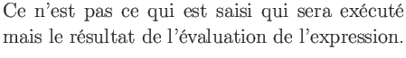
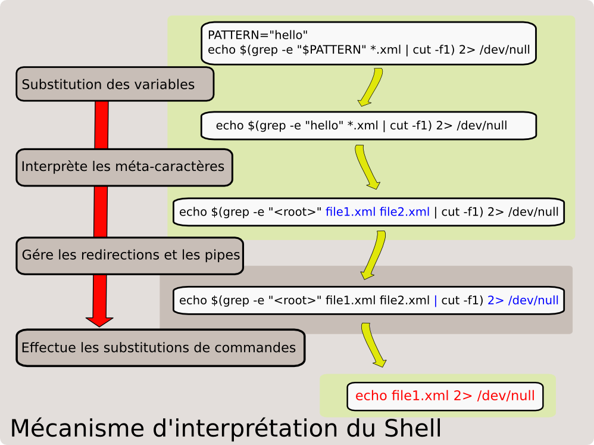

suivant: Les différents Shells existants
monter: Introduction
précédent: Introduction
Table des matières
Index
Le shell est un interpréteur de commandes qui :
- initialise l'environnement,
- génère le prompt.
Quand une commande est validée, le shell
- effectue les substitutions de variables,
- interprète les métacaractères,
- gère les redirections et les pipes,
- effectue les substitutions de commandes,
- exécute la commande.
C'est le mécanisme d'évaluation du shell. Ces
étapes sont à garder en émoire pour toute commande saisie au
clavier ou bien enregistrée dans un script. Il faut donc bien retenir que:
whiteyellow

Figure:
Mécanisme d'interprétation du Shell
|

|
baudry@esme.fr